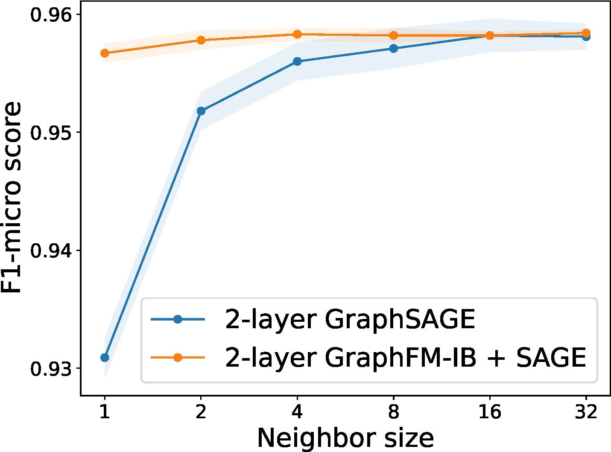

Section 6.8 Learning Data Compositional Networks
So far, we have considered the compositional loss function, which involves comparing the output of one data \(h(\mathbf{w}; \mathbf{x})\) with that of many other data. In this section, we consider compositional networks, where the computation of \(h(\mathbf{w}; \mathbf{x})\) for one data \(\mathbf{x}\) depends on many other data.
6.8.1 Large-scale Graph Neural Networks
Graph Neural Networks (GNNs) are a powerful class of models designed to learn representations from graph-structured data, where information is distributed across nodes and edges. Unlike traditional neural networks that operate on grid-like inputs, GNNs leverage the connectivity structure of graphs to propagate and aggregate information from a node’s neighborhood, capturing both local and global patterns. GNNs have been successfully applied to tasks such as node classification, link prediction, and graph-level classification in domains including social networks, molecular chemistry, and recommendation systems.
A key distinction in GNN-based learning lies between transductive and inductive settings. In transductive learning, the model is trained and tested on the same fixed graph, meaning all nodes (including test nodes) are present during training. Classic GNN models such as Graph Convolutional Neural (GCN) Network operate in this setting. In contrast, inductive methods aim to generalize to unseen nodes or entirely new graphs not available during training. GraphSAGE (Graph Sample and Aggregate) is a method that is designed for inductive learning, enabling flexible deployment in dynamic environments where new nodes or graphs continuously emerge.
Let \(\mathcal{G} = (\mathcal{V}, \mathcal{E})\) denote a graph, where \(\mathcal{V}\) is the set of nodes and \(\mathcal{E}\) is the set of edges. Each node \(v \in \mathcal{V}\) is associated with a feature vector \(\mathbf{x}_v\). Given a node \(v\) with neighbors \(\mathcal{N}(v)\), a general scheme for updating the node’s representation in layer \(k\) is:
\[\begin{align*} \mathbf{h}_{\mathcal{N}(v)}^{(k)} &= \text{Aggregate}\left(\left\{ \mathbf{h}_u^{(k-1)} : u \in \mathcal{N}(v) \right\}\right), \\ \mathbf{h}_v^{(k)} &= \text{Update}\left( \mathbf{h}_v^{(k-1)}, \mathbf{h}_{\mathcal{N}(v)}^{(k)} \right), \end{align*}\]
where the first step aggregates the representations of the nodes in the immediate neighborhood of node \(v\) into a single vector, and the second step updates the node’s current representation \(\mathbf{h}^{(k-1)}_v\) with the aggregated neighborhood vector to generate a new embedding \(\mathbf{h}_v^{(k)}\).
GraphSAGE (Graph Sample and Aggregate)
GraphSAGE is a scalable inductive framework for learning node representations in large graphs. Let us consider a particular implementation of the above framework:
\[\begin{align*} &\mathcal{A}(\{{\mathbf{h}}^{(k-1)}_u: u\in \mathcal{N}(v)\cup \{v\}\})=\frac{1}{|\mathcal{N}_v|+1}\sum_{u\in\mathcal{N}(v)\cup\{v\}}{\mathbf{h}}^{(k-1)}_u\\ &{\mathbf{h}}^{(k)}_v = \sigma\left(\mathbf{W}^{(k)}\cdot \mathcal{A}(\{{\mathbf{h}}^{(k-1)}_u: u\in \mathcal{N}_v\cup \{v\}\}) \right), \end{align*}\]
where \(\mathcal{A}(\cdot)\) denotes the mean operator and \(\sigma(\cdot)\) is an activation function.
When working with large-scale graphs, GraphSAGE employs node sampling to ensure scalability. At each layer, a node samples a fixed number of neighbors and aggregates their features. However, as the number of layers increases, the number of nodes involved in computing a single node’s embedding can grow exponentially. Specifically, if each node samples \(K\) neighbors and the model has \(L\) layers, then computing the embedding for a single node may involve up to \(K^L\) nodes. This exponential growth is known as the neighborhood explosion problem, which can lead to significant computational and memory overhead, especially in deep models or large graphs. While reducing \(K\) (e.g., to 1) can mitigate neighborhood explosion, it may also introduce high variance in the estimation of the mean operator potentially degrading model performance.
GraphSAGE with Feature Momentum
The challenge discussed earlier arises from the compositional structure of \({\mathbf{h}}^{(k)}_v\). To address this, we leverage a moving average estimator. Let \(\mathcal{B}_v \subset \mathcal{N}(v)\) be a sub-sampled neighborhood of node \(v\), and define \(\bar{\mathcal{B}}_v = \mathcal{B}_v \cup \{v\}\). At the \(t\)-th iteration, we estimate the aggregated feature vector as follows:
\[\begin{align}\label{eqn:FM} {\tilde{\mathbf{h}}}_v^{(k, t)} = \begin{cases} {\tilde{\mathbf{h}}}_v^{(k, t-1)} & \text{if } v \notin \mathcal{D}_k, \\ (1 - \gamma) {\tilde{\mathbf{h}}}_v^{(k, t-1)} + \gamma \hat{\mathcal{A}}\left(\left\{ {\hat{\mathbf{h}}}_u^{(k-1, t)} : u \in \bar{\mathcal{B}}_v \right\} \right) & \text{otherwise}, \end{cases} \end{align}\]
where \(\mathcal{D}_k\) is the sub-sampled set of nodes updated at the \(k\)-th layer, \(\gamma \in (0,1)\) is the momentum parameter, and \(\hat{\mathcal{A}}(\cdot)\) is an unbiased estimator of the aggregation function \(\mathcal{A}(\cdot)\) over the neighborhood \(\mathcal{N}_v \cup \{v\}\). The estimator is computed as:
\[\hat{\mathcal{A}}\left(\left\{ {\hat{\mathbf{h}}}_u^{(k-1, t)} : u \in \bar{\mathcal{B}}_v \right\} \right) = \frac{1}{|\mathcal{N}_v| + 1} {\hat{\mathbf{h}}}_v^{(k-1, t)} + \frac{|\mathcal{N}_v|}{|\mathcal{N}_v| + 1} \cdot \frac{1}{|\mathcal{B}_v|} \sum_{u \in \mathcal{B}_v} {\hat{\mathbf{h}}}_u^{(k-1, t)}.\]
Next, we update the feature representation at the \(k\)-th layer:
\[\begin{align}\label{eqn:hf} {\hat{\mathbf{h}}}_v^{(k, t)} = \sigma\left({\mathbf{W}}_t^{(k)} \cdot {\tilde{\mathbf{h}}}_v^{(k, t)}\right). \end{align}\]
This process is repeated for \(L\) layers to compute the output representation \({\hat{\mathbf{h}}}_v^{(L,t)}\) for sub-sampled nodes \(v \in \mathcal{D}_L\), which are then used to compute the mini-batch loss. We refer to this approach as GraphSAGE with Feature Momentum.
This method effectively reduces the required number of sampled neighbors per node while maintaining the performance of using full neighborhoods; see Figure 6.32.

6.8.2 Multi-instance Learning with Attention
Multi-instance learning (MIL) refers to a setting where a bag of instances are observed for an object of interest and only one label is given to describe that object. Many real-life applications can be formulated as MIL. For example, the medical imaging data for diagnosing a patient usually consists of a series of 2D high-resolution images (e.g., CT scan), and only a single label (containing a tumor or not) is assigned to the patient.
A standard assumption for MIL is that a bag is labeled positive if at least one of its instances has a positive label, and negative if all of its instances have negative labels. The assumption implies that a MIL model must be permutation-invariant for the prediction function \(h(\mathcal{X})\), where \(\mathcal{X}=\{\mathbf{x}_1,\ldots, \mathbf{x}_m\}\) denotes a bag of instances. To achieve permutation invariant property, fundamental theorems of symmetric functions have been developed. In particular, a scoring function for a set of instances \(\mathcal{X}\) denoted by \(h(\mathcal{X})\in\mathbb{R}\), is a symmetric function if and only if it can be decomposed as \(h(\mathcal{X}) = g(\sum_{\mathbf{x}\in\mathcal{X}}\psi(\mathbf{x}))\) (Zaheer et al., 2017), where \(g\) and \(\psi\) are suitable transformations. Another theory is that a Hausdorff continuous symmetric function \(h(\mathcal{X})\in\mathbb{R}\) can be arbitrarily approximated by a function in the form \(g(\max_{\mathbf{x}\in\mathcal{X}}\psi(\mathbf{x}))\) (Qi et al. 2016), where max is the element-wise vector maximum operator and \(\psi\) and \(g\) are continuous functions. These theories provide support for several widely used pooling operators used for MIL.
Deep learning with different pooling operations
Let \(e(\mathbf{w}_e; \mathbf{x})\in\mathbb{R}^{d_o}\) be the instance-level representation encoded by a neural network \(\mathbf{w}_e\), \(\phi(\mathbf{w}; \mathbf{x})\in [0,1]\) be the instance-level prediction score (after some activation function), and \(h(\mathbf{w}; \mathcal{X}_i)\in [0,1]\) be the pooled prediction score of the bag \(i\) over all its instances. Besides, \(\sigma(\cdot)\) denotes the sigmoid activation.
Softmax pooling of predictions
The simplest approach is to take the maximum of predictions of all instances in the bag, i.e., \(h(\mathbf{w}; \mathcal{X}) = \max_{\mathbf{x}\in\mathcal{X}}\phi(\mathbf{w}; \mathbf{x})\). However, the max operation is non-smooth, which usually causes difficulty in optimization. In practice, a smoothed-max (aka. log-sum-exp) pooling operator is used instead:
\[\begin{align}\label{eqn:softpool} h(\mathbf{w}; \mathcal{X}) = \tau \log\left(\frac{1}{|\mathcal{X}|}\sum_{\mathbf{x}\in\mathcal{X}}\exp(\phi(\mathbf{w}; \mathbf{x})/\tau)\right), \end{align}\]
where \(\tau>0\) is a hyperparameter and \(\phi(\mathbf{w};\mathbf{x})\) is the prediction score for instance \(\mathbf{x}\).
Mean pooling of predictions
The mean pooling operator just takes the average of predictions of individual instances, i.e., \(h(\mathbf{w}; \mathcal{X}) = \frac{1}{|\mathcal{X}|}\sum_{\mathbf{x}\in\mathcal{X}}\phi(\mathbf{w}; \mathbf{x})\). Indeed, smoothed-max pooling interpolates between the max pooling (with \(\tau=0\)) and the mean pooling (with \(\tau=\infty\)).
Attention-based Pooling of features
Attention-based pooling aggregates the feature representations using attention, i.e.,
\[\begin{align}\label{eqn:attpoolf} E(\mathbf{w}; \mathcal{X}) = \sum_{\mathbf{x}\in\mathcal{X}}\frac{\exp(g(\mathbf{w}; \mathbf{x}))}{\sum_{\mathbf{x}'\in\mathcal{X}}\exp(g(\mathbf{w}; \mathbf{x}'))}e(\mathbf{w}_e; \mathbf{x}), \end{align}\]
where \(g(\mathbf{w};\mathbf{x})\) is a parametric function, e.g., \(g(\mathbf{w}; \mathbf{x})=\mathbf{w}_a^{\top}\text{tanh}(V e(\mathbf{w}_e; \mathbf{x}))\), where \(V\in\mathbb{R}^{m\times d_o}\) and \(\mathbf{w}_a\in\mathbb{R}^m\). Based on the aggregated feature representation, the bag level prediction can be computed by
\[\begin{align}\label{eqn:attpool} h(\mathbf{w}; \mathcal{X}) &= \sigma(\mathbf{w}_c^{\top}E(\mathbf{w}; \mathcal{X}))= \sigma\left(\sum_{\mathbf{x}\in\mathcal{X}}\frac{\exp(g(\mathbf{w}; \mathbf{x}))s(\mathbf{w};\mathbf{x})}{\sum_{\mathbf{x}'\in\mathcal{X}}\exp(g(\mathbf{w}; \mathbf{x}'))}\right), \end{align}\]
where \(s(\mathbf{w};\mathbf{x}) = \mathbf{w}_c^{\top}e(\mathbf{w}_e; \mathbf{x})\).
Optimization Algorithms
Given the pooled prediction \(h(\mathbf{w}; \mathcal{X})\), the empirical risk minimization (ERM) problem is defined as:
\[\min_{\mathbf{w}}\frac{1}{n}\sum_{i=1}^N\ell_i(h(\mathbf{w}; \mathcal{X}_i)).\]
The main challenge in solving this problem lies in the computational cost of evaluating \(h(\mathbf{w}; \mathcal{X}_i)\), as it involves aggregating over potentially many instances.
To address this, we employ techniques from compositional optimization. Specifically, we express the smoothed-max pooling in (\(\ref{eqn:softpool}\)) as a composition \(h(\mathbf{w}; \mathcal{X}_i) = f_2(f_1(\mathbf{w}; \mathcal{X}_i))\), where the functions \(f_1\) and \(f_2\) are defined as:
\[\begin{align*} &f_1(\mathbf{w}; \mathcal{X}_i) = \frac{1}{|\mathcal{X}_i|} \sum_{\mathbf{x}_{i,j} \in \mathcal{X}_i} \exp(\phi(\mathbf{w}; \mathbf{x}_{i,j})/\tau), \\ &f_2(s_i) = \tau \log(s_i). \end{align*}\]
Similarly, we express the attention-based pooling in (\(\ref{eqn:attpool}\)) as a compositional function \(h(\mathbf{w}; \mathcal{X}_i) = f_2(f_1(\mathbf{w}; \mathcal{X}_i))\), with:
\[f_1(\mathbf{w}; \mathcal{X}_i) = \begin{bmatrix} \frac{1}{|\mathcal{X}_i|} \sum_{\mathbf{x}_{i,j} \in \mathcal{X}_i} \exp(g(\mathbf{w}; \mathbf{x}_{i,j})) \mathbf{w}_c^\top e(\mathbf{w}_e; \mathbf{x}_{i,j}) \\ \frac{1}{|\mathcal{X}_i|} \sum_{\mathbf{x}_{i,j} \in \mathcal{X}_i} \exp(g(\mathbf{w}; \mathbf{x}_{i,j})) \end{bmatrix}, \quad f_2(\mathbf{u}_i) = \sigma\left(\frac{[\mathbf{u}_i]_1}{[\mathbf{u}_i]_2}\right).\]
The key difference between the two pooling mechanisms is that the inner function \(f_1\) in attention-based pooling is a vector-valued function with two components. In both cases, the computational bottleneck lies in computing \(f_1(\mathbf{w}; \mathcal{X}_i)\).
To reduce this cost, we maintain a dynamic estimator \(u_{i,t}\) (scalar) or \(\mathbf u_{i,t}\) (vector) for each bag \(\mathcal{X}_i\). At iteration \(t\), for any \(\mathcal{X}_i \in \mathcal{B}_{o,t}\) (a mini-batch of bags), we update the estimator as:
\[\begin{align}\label{eqn:ui} u_{i,t} = (1 - \gamma) u_{i,t-1} + \gamma f_1(\mathbf{w}_t; \mathcal{B}_{i,t}), \end{align}\]
where \(\mathcal{B}_{i,t} \subset \mathcal{X}_i\) is a mini-batch of instances sampled from \(\mathcal{X}_i\), and \(\gamma \in [0,1]\) is a smoothing parameter. For smoothed-max pooling, this becomes:
\[\begin{align}\label{eqn:sm} u_{i,t} = (1 - \gamma) u_{i,t-1} + \frac{\gamma}{|\mathcal{B}_{i,t}|} \sum_{\mathbf{x}_{i,j} \in \mathcal{B}_{i,t}} \exp(\phi(\mathbf{w}_t; \mathbf{x}_{i,j})/\tau), \end{align}\]
and for attention-based pooling, we update:
\[\begin{align}\label{eqn:ab} \mathbf{u}_{i,t} = (1 - \gamma) \mathbf{u}_{i,t-1} + \gamma \begin{bmatrix} \frac{1}{|\mathcal{B}_{i,t}|} \sum_{\mathbf{x}_{i,j} \in \mathcal{B}_{i,t}} \exp(g(\mathbf{w}_t; \mathbf{x}_{i,j})) \delta(\mathbf{w}_t; \mathbf{x}_{i,j}) \\ \frac{1}{|\mathcal{B}_{i,t}|} \sum_{\mathbf{x}_{i,j} \in \mathcal{B}_{i,t}} \exp(g(\mathbf{w}_t; \mathbf{x}_{i,j})) \end{bmatrix}. \end{align}\]
The corresponding vanilla gradient estimator for softmax pooling is:
\[\mathbf{z}_t = \frac{1}{|\mathcal{B}|} \sum_{\mathcal{X}_i \in \mathcal{B}} \ell_i'(f_2(u_{i,t})) \nabla f_2(u_{i,t}) \frac{1}{|\mathcal{B}_{i,t}|} \sum_{\mathbf{x}_{i,j} \in \mathcal{B}_{i,t}} \nabla \exp(\phi(\mathbf{w}_t; \mathbf{x}_{i,j})/\tau),\]
and for attention-based pooling:
\[\mathbf{z}_t = \frac{1}{|\mathcal{B}|} \sum_{\mathcal{X}_i \in \mathcal{B}} \ell_i'(f_2(\mathbf{u}_{i,t})) \begin{bmatrix} \frac{1}{|\mathcal{B}_{i,t}|} \sum_{\mathbf{x}_{i,j} \in \mathcal{B}_{i,t}} \nabla\left(\exp(g(\mathbf{w}_t; \mathbf{x}_{i,j})) s(\mathbf{w}_t; \mathbf{x}_{i,j})\right) \\ \frac{1}{|\mathcal{B}_{i,t}|} \sum_{\mathbf{x}_{i,j} \in \mathcal{B}_{i,t}} \nabla \exp(g(\mathbf{w}_t; \mathbf{x}_{i,j})) \end{bmatrix}^{\!\!\top} \nabla f_2(\mathbf{u}_{i,t}).\]
Then we can update the model parameter \(\mathbf{w}_{t+1}\) by Momentum, Adam, or Adam-W methods.
As established in Chapter 5, the theory of compositional optimization guarantees that the moving average estimators \(\mathbf{u}_{i,t}\) ensure the average estimation error,
\[\frac{1}{T} \sum_{t=1}^{T} \|\mathbf{u}_{i,t} - f_1(\mathbf{w}_t; \mathcal{X}_i)\|_2^2,\]
converges to zero as \(T \to \infty\), provided that the model parameters and hyperparameters are properly updated.